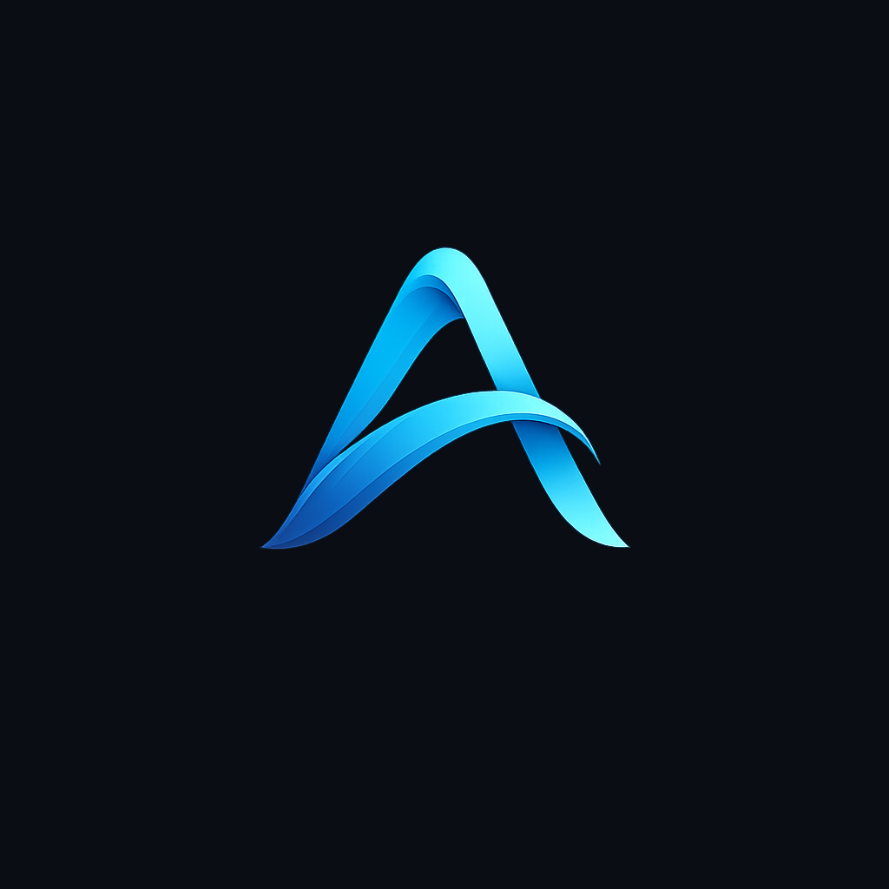
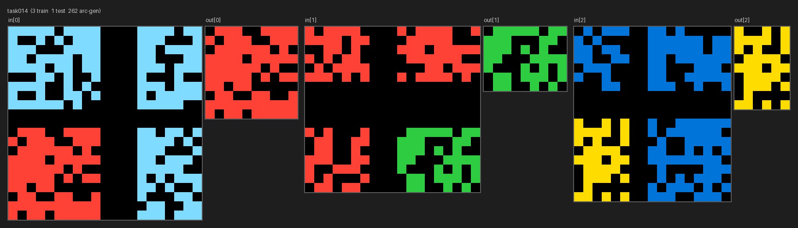

Portfolio
Ben Maxwell
I build machine learning systems and AI tools — from training language models from scratch to shipping full-stack apps.
Projects & Learning

soloLLM
A small language model research project built from scratch on consumer hardware. The current SoloLLM 1.0 checkpoints were trained on 9.8B tokens, with a 152M model that beats GPT-2 small across the fixed base-model evaluation suite and a 123M comparison model that stays smaller than GPT-2 small.
- Python
- PyTorch
- Hugging Face

Ariya
A private AI workbench for macOS, iOS, and local automation. Built to coordinate assistant memory, persistent chats, agent workflows, terminal sessions, canvas diagrams, and rebuild tooling.
- SwiftUI macOS/iOS clients
- Node backend and local data layer
- Agent/session orchestration

Handcrafted Neural Networks
Neural-network logic built by hand — manually choosing features, weights, and thresholds across notebooks to make the mechanics of a tiny network visible, from 3×3 line detection to an ARC-style task.
- Python
- PyTorch
- From scratch